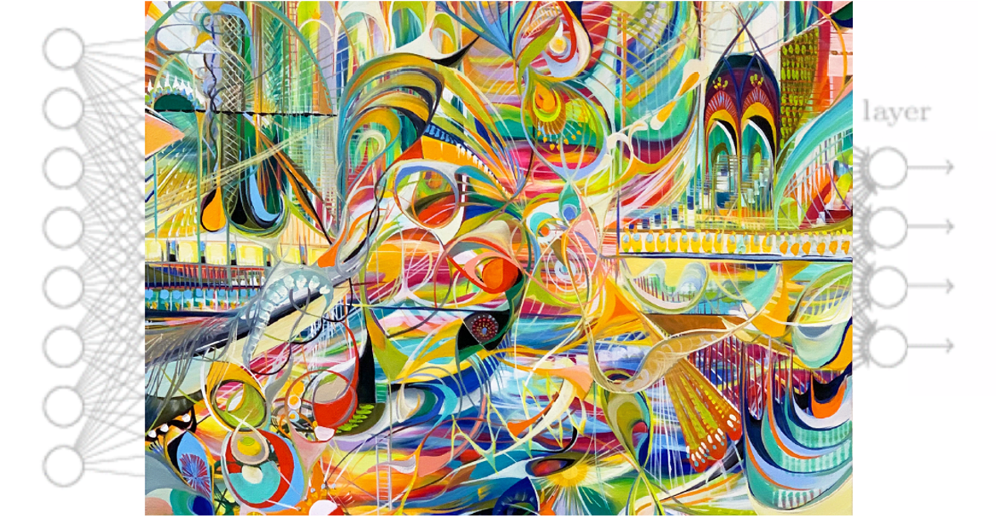
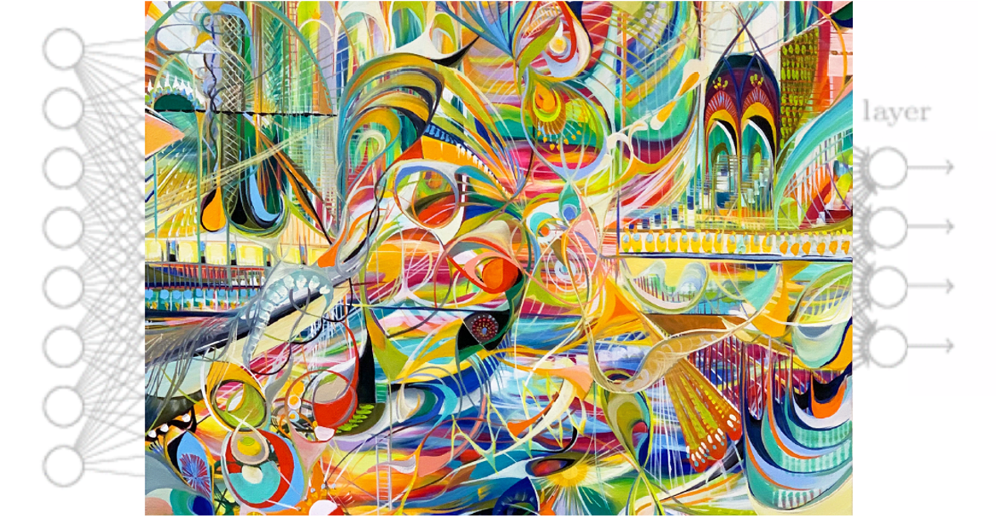

Association Citation


What if I made a textfile data structure that was just a big association matrix and stored ideas
directly like that. What if you could do something analogous to latex to think through this method
which is optimally stored and decoded by others?
What if I used the Twitter API to grab my tweets(need to see if this is possible)
and could parse them to update the association matrix each day
And I have an encoding system, a tweet format. Just basically writing code to write
in a way that's unbelievably systematic so that attacks and disagreements are nuanced.
The tension point is clearer. Write with graphs, not sentences??
Could probably have a flag to make it an encoded tweet. My code filters out normal tweets. Could be fun.
A neat code notebook that's publicly built. Thinking aloud? Idk maybe this is something for an alt account
And you can just import parts of the network and carry on Adding to that neighborhood of the association matrix
How do I turn my tweets into Information geometry? Imagine a thought is just a flow through that information geometry,
like dashes of light, electrons flowing through silicon...
Topology, network connectivity: flows are of all kinds -- how to record "desiring machines" in data...
Just store some proofs and point them at stuff after assigning them a name. Save chunks of text, explanations.
But make it such that you store it once then import it forever more.
What I liked about code is that I could dig into exactly how it was all written out.
This way one thinks precisely and resolutely. One can always be at the edge of ones knowledge.
One can revisit past ways of thinking and change them over time like it's a GitHub page with a definite history.
And then figure out text AI to turn association networks like this into great prose????
That speculation is offered. I don't know at all how that'd work. But what if you could
write technically and rigorously while being able to run it through some style generator
so that it can be tailored to anyone's taste?
Systematic neologisms for the thinker, the literary style of choice for the reader...